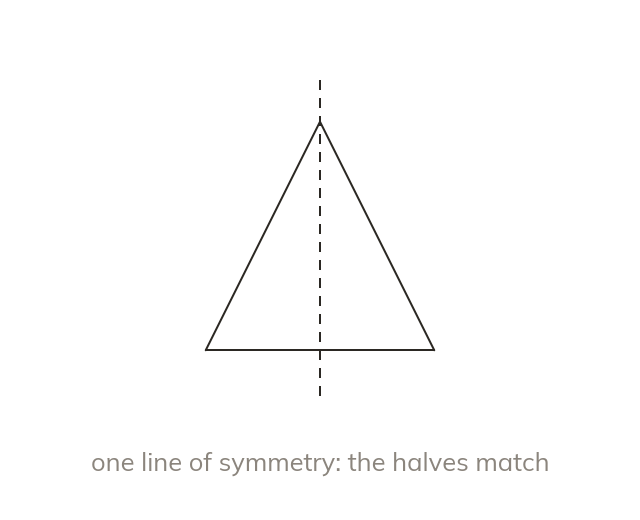

Mirror halves
A line of symmetry splits a shape into two mirror-image halves. Folding along it lays one half on the other.
A line of symmetry divides a shape into two halves that are mirror images of each other. Folding along it lays one half exactly on the other.